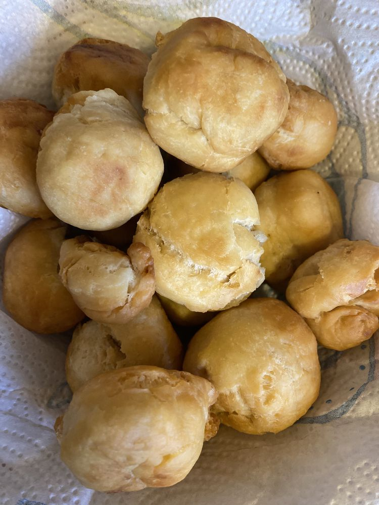

Biscuits

description
These fried dumplings are usually served with codfish in Jamaica as part of a big weekend breakfast.
Ingredients
- 4 cups all-purpose flour
- 2 teaspoons baking powder
- 1 ½ teaspoons salt
- ½ cup butter, cut into cubes and softened
- ½ cup cold water
- 1 cup vegetable oil for frying
Steps
- Mix flour, baking powder, and salt together in a large bowl. Rub in butter until the mixture
is crumbly. Mix in water, 1 tablespoon at a time, to form a firm dough; knead briefly.
- Heat oil in a large heavy skillet over medium heat.
- Break off pieces of dough and shape them into biscuit-like patties. Place just enough of the dumplings
into the hot oil so they are not crowded;
fry until golden brown, about 3 minutes per side. Remove from the pan and drain on paper towels before serving.